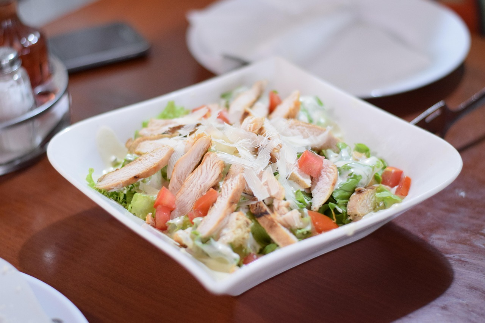

Healthy Chicken Salad
Home

Image by Explorer Bob
Description
This healthy chicken salad recipe is made with a mixture of Greek yogurt and cottage cheese instead of regular mayonnaise,
in a healthier version that's still creamy and delicious but higher in protein. Apples and dried cranberries add a sweet-tart flavor,
while chopped pecans provide textural interest in every bite. Serve it on crackers, on a croissant, in a pita, or grab a fork and just dig in!
Ingredients
- 1 (6 ounce) container fat-free Greek yogurt
- 1/2 cup low-fat cottage cheese
- 1/2 cup diced apple
- 1/4 cup sweetened dried cranberries
- 2 tablespoons chopped onion
- 2 tablespoons chopped pecans
- 1/2 tablespoon Dijon mustard
- 1 and 1/4 cups cubed, cooked chicken
- salt and ground pepper to taste
Directions
- Gather all ingredients.
- Stir Greek yogurt, cottage cheese, celery, apple, cranberries, onion, pecans, and Dijon mustard in a bowl until well combined.
- Mix in chicken. Season with salt and pepper.
- Enjoy!